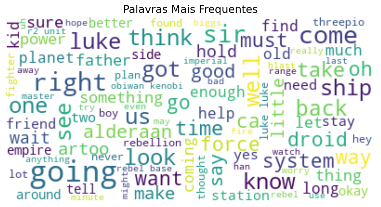
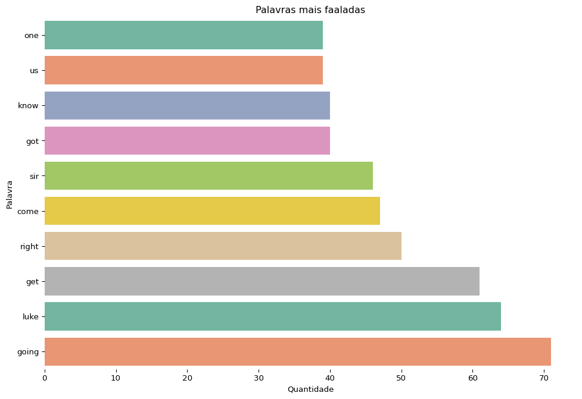
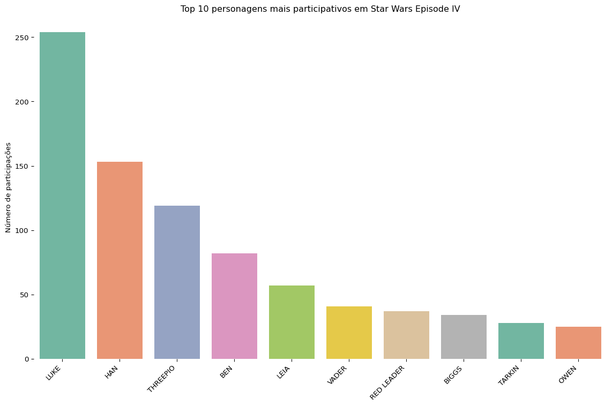
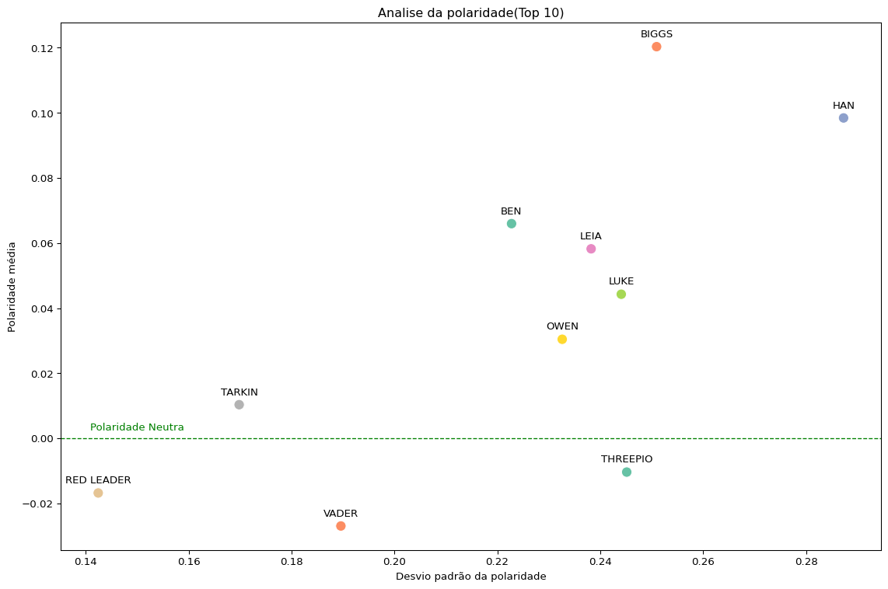
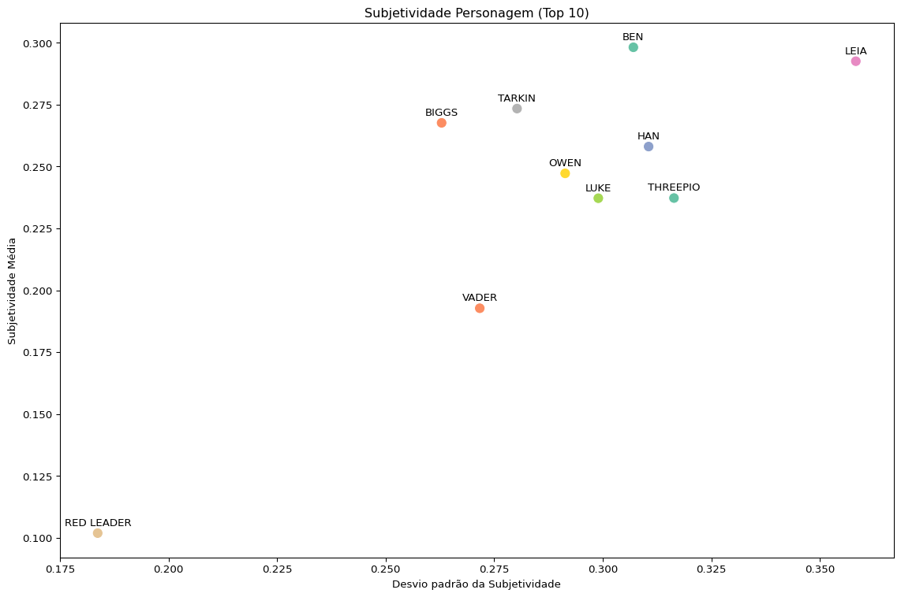
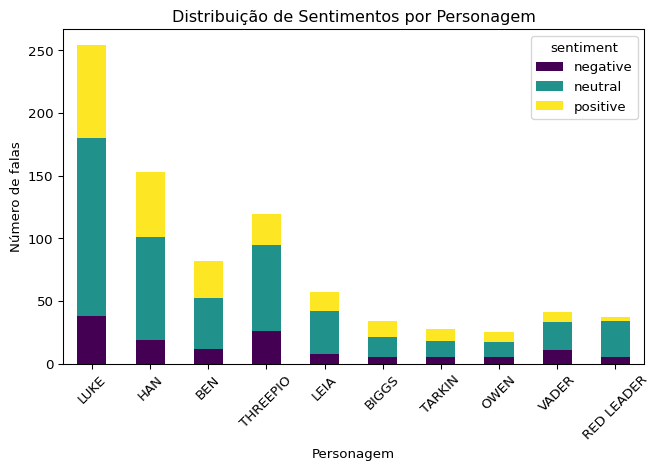

Código
df = pd.read_csv("datasets/SW_EpisodeIV.csv")
personagens = [personagem.capitalize() for personagem in df["character"].unique()]
n_personagens = len(personagens)Este relatório tem como objetivo analisar as falas dos personagens do filme Star Wars: Episode IV - A New Hope por meio de técnicas de Processamento de Linguagem Natural (NLP). A análise considera o roteiro original em inglês, portanto os nomes dos personagens e suas falas estarão neste idioma. Serão explorados padrões de frequência de palavras, sentimentos expressos, além de visualizações como nuvem de palavras e gráficos comparativos.
df = pd.read_csv("datasets/SW_EpisodeIV.csv")
personagens = [personagem.capitalize() for personagem in df["character"].unique()]
n_personagens = len(personagens)O filme dos starwars episodio IV apresentou 60 personagens ao longo da obra sendo eles Threepio, Luke, Imperial officer, Vader, Rebel officer, Trooper, Chief pilot, Captain, Woman, Fixer, Camie, Biggs, Deak, Leia, Commander, Second officer, First trooper, Second trooper, Beru, Owen, Aunt beru, Ben, Tagge, Motti, Tarkin, Bartender, Creature, Human, Han, Greedo, Jabba, Officer cass, Voice over death star intercom, Officer, Voice, Gantry officer, Intercom voice, Trooper voice, First officer, Willard, Death star intercom voice, Dodonna, Gold leader, Wedge, Man, Red leader, Chief, Massassi intercom voice, Red ten, Red seven, Porkins, Red nine, Red eleven, Astro-officer, Control officer, Gold five, Gold two, Wingman, Base voice, Technician
Antes de fazer analises mais profundas, gostaria de fazer um apanhado geral de quais são as palavras mais faladas
Ao fazer uma analise prévia de quais são as palavras mais ditas ao longo da obra é possível criar uma núvem de palavras e o gráfico de barras demonstrando quais são, a nuvem são as top 100 já os gráficos de barras são as top 10. Irei começar a demonstrar pelo gráfico de nuvem de palavras
stop_words = set(stopwords.words("english"))
stop_words.update(["you","it", "nt"])
# Processamento robusto com tratamento de erros
words = []
for sentence in df["speech"]:
try:
tokens = word_tokenize(str(sentence)) # Garante que seja string
for word in tokens:
cleaned = clean_word(word)
if cleaned and cleaned not in stop_words:
words.append(cleaned)
except Exception as e:
print(f"Erro ao processar: {sentence}\nErro: {e}")
text = " ".join(words)
# Criar a nuvem de palavras
wordcloud = WordCloud(background_color="white", max_font_size=32, min_font_size=8, max_words=100).generate(text)
# Plotar a nuvem de palavras
plt.figure(figsize=(10, 6))
plt.imshow(wordcloud, interpolation='bilinear')
plt.axis('off') # Remove eixos
plt.title("Palavras Mais Frequentes", fontsize=16)
plt.show()
já o gráfico de barras, apresenta o seguinte formato
df_plot_tmp = pd.Series(words).value_counts().head(10).sort_values(ascending=True).reset_index()
plt.figure(figsize=(12,8))
sns.barplot(data=df_plot_tmp, x="count", y="index", hue="index", palette="Set2")
plt.title("Palavras mais faaladas")
plt.xlabel("Quantidade")
plt.ylabel("Palavra")
plt.box(False)
plt.show()
feito essas considerações globais, agora aprofundaremos sobre a participação dos personagens
df_plot = df.groupby("character").count().sort_values("speech", ascending=False)
top_10 = df_plot.head(10)
total_participation = df_plot["speech"].sum().item()
top_10_participation = top_10.sum().item()
other_participation = total_participation - top_10_participation
top_10_percentage_participation = round(top_10_participation/total_participation,2)
others_percentage_participation = round(1 -top_10_percentage_participation, 2) Ao realizar a contagem de aparição de cada personagem durante o filme obtemos a seguinte tabela
tbl_to_display = df_plot.reset_index()
display(tbl_to_display)| character | speech | |
|---|---|---|
| 0 | LUKE | 254 |
| 1 | HAN | 153 |
| 2 | THREEPIO | 119 |
| 3 | BEN | 82 |
| 4 | LEIA | 57 |
| 5 | VADER | 41 |
| 6 | RED LEADER | 37 |
| 7 | BIGGS | 34 |
| 8 | TARKIN | 28 |
| 9 | OWEN | 25 |
| 10 | TROOPER | 19 |
| 11 | GOLD LEADER | 14 |
| 12 | WEDGE | 14 |
| 13 | OFFICER | 11 |
| 14 | RED TEN | 8 |
| 15 | GOLD FIVE | 7 |
| 16 | JABBA | 6 |
| 17 | DEATH STAR INTERCOM VOICE | 6 |
| 18 | DODONNA | 6 |
| 19 | INTERCOM VOICE | 6 |
| 20 | AUNT BERU | 6 |
| 21 | FIRST TROOPER | 6 |
| 22 | GREEDO | 6 |
| 23 | TAGGE | 4 |
| 24 | HUMAN | 4 |
| 25 | MOTTI | 4 |
| 26 | COMMANDER | 3 |
| 27 | BARTENDER | 3 |
| 28 | VOICE | 3 |
| 29 | SECOND TROOPER | 3 |
| 30 | MASSASSI INTERCOM VOICE | 3 |
| 31 | WINGMAN | 2 |
| 32 | RED NINE | 2 |
| 33 | GOLD TWO | 2 |
| 34 | FIXER | 2 |
| 35 | WILLARD | 2 |
| 36 | GANTRY OFFICER | 2 |
| 37 | IMPERIAL OFFICER | 2 |
| 38 | CHIEF | 2 |
| 39 | CAMIE | 2 |
| 40 | ASTRO-OFFICER | 1 |
| 41 | BERU | 1 |
| 42 | CAPTAIN | 1 |
| 43 | CHIEF PILOT | 1 |
| 44 | DEAK | 1 |
| 45 | CREATURE | 1 |
| 46 | CONTROL OFFICER | 1 |
| 47 | FIRST OFFICER | 1 |
| 48 | BASE VOICE | 1 |
| 49 | MAN | 1 |
| 50 | OFFICER CASS | 1 |
| 51 | REBEL OFFICER | 1 |
| 52 | RED SEVEN | 1 |
| 53 | RED ELEVEN | 1 |
| 54 | PORKINS | 1 |
| 55 | SECOND OFFICER | 1 |
| 56 | TECHNICIAN | 1 |
| 57 | TROOPER VOICE | 1 |
| 58 | VOICE OVER DEATH STAR INTERCOM | 1 |
| 59 | WOMAN | 1 |
Seguindo para apenas os 10 mais participativos, é observável que eles representam 82.0% do total enquanto os demais representam 18.0%.
Devido a esse fato, usarei para análises futuras apenas os 10 mais participativos.
plt.figure(figsize=(12,8))
sns.barplot(data=top_10, x="character", y="speech", hue="character", dodge=False, palette="Set2")
plt.title("Top 10 personagens mais participativos em Star Wars Episode IV")
plt.xlabel("")
plt.xticks(rotation=45, ha="right")
plt.box(False)
plt.ylabel("Número de participações")
plt.tight_layout()
plt.show()
Primeiro, é necessário realizar os calculos para verificar os sentimentos das frases proferidas por cada personagem em cada ocasião, para isso será usado o textblob.sentiment que trará duas informações a polaridade e a subjetividade.
A polaridade é uma medida que indica o sentimento de um texto, variando de -1 (extremamente negativo) a 1 (extremamente positivo), sendo 0 neutro. Já a subjetividade é outra medida que mede o grau de opinião pessoal, emoção ou julgamento presente em um texto, variando de 0 (objetivo/factual) ,não há opinião é mera apresentação de um fato exemplo: Paris é a capital da França, a 1 (subjetivo/opinativo) ou seja é opinião dele, por exemplo rio de janeiro é o lugar mais bonito do mundo.
df_top_10 = df[df["character"].isin(top_10.reset_index()["character"])].copy()
df_top_10["polarity"] = df_top_10["speech"].apply(lambda text:
TextBlob(text).sentiment.polarity)
df_top_10["subjectivity"] = df_top_10["speech"].apply(lambda text: TextBlob(text).sentiment.subjectivity)
df_top_10_plot_polarity = df_top_10.groupby("character").agg(polarity_mean = ("polarity", "mean"), polarity_sd = ("polarity", "std"), subjectivity_mean = ("subjectivity", "mean"), subjectivity_sd = ("subjectivity", "std")).reset_index()
df_top_10_plot_polarity["polarity_sd"] = df_top_10_plot_polarity["polarity_sd"].fillna(0)
df_top_10_plot_polarity["subjectivity_sd"] = df_top_10_plot_polarity["subjectivity_sd"].fillna(0.5)
display(df_top_10)| character | speech | polarity | subjectivity | |
|---|---|---|---|---|
| 0 | THREEPIO | Did you hear that? They've shut down the main... | 0.212037 | 0.503704 |
| 1 | THREEPIO | We're doomed! | 0.000000 | 0.000000 |
| 2 | THREEPIO | There'll be no escape for the Princess this time. | 0.000000 | 0.000000 |
| 3 | THREEPIO | What's that? | 0.000000 | 0.000000 |
| 4 | THREEPIO | I should have known better than to trust the l... | 0.500000 | 0.500000 |
| ... | ... | ... | ... | ... |
| 1004 | LEIA | Hey, I knew there was more to you than money. | 0.500000 | 0.500000 |
| 1005 | LUKE | Oh, no! | 0.000000 | 0.000000 |
| 1006 | THREEPIO | Oh, my! Artoo! Can you hear me? Say somethi... | 0.000000 | 0.000000 |
| 1008 | THREEPIO | You must repair him! Sir, if any of my circui... | 0.500000 | 1.000000 |
| 1009 | LUKE | He'll be all right. | 0.285714 | 0.535714 |
830 rows × 4 columns
Foi retirado uma média e o desvio padrão de cada metrica agrupado por personagem feito uma média. Sendo o desvio padrão uma medida que indica a variabilidade de uma metrica, ele vai de 0, ou seja é algo consistente, até infinito, ou seja varia muito. Ou seja quanto mais positivo o valor mais indica que varia bastante
display(df_top_10_plot_polarity)| character | polarity_mean | polarity_sd | subjectivity_mean | subjectivity_sd | |
|---|---|---|---|---|---|
| 0 | BEN | 0.065954 | 0.222757 | 0.298160 | 0.307038 |
| 1 | BIGGS | 0.120330 | 0.250944 | 0.267634 | 0.262884 |
| 2 | HAN | 0.098428 | 0.287280 | 0.258052 | 0.310549 |
| 3 | LEIA | 0.058216 | 0.238223 | 0.292543 | 0.358260 |
| 4 | LUKE | 0.044266 | 0.244080 | 0.237182 | 0.298967 |
| 5 | OWEN | 0.030424 | 0.232605 | 0.247221 | 0.291335 |
| 6 | RED LEADER | -0.016799 | 0.142438 | 0.101866 | 0.183697 |
| 7 | TARKIN | 0.010328 | 0.169827 | 0.273399 | 0.280254 |
| 8 | THREEPIO | -0.010380 | 0.245140 | 0.237257 | 0.316389 |
| 9 | VADER | -0.026942 | 0.189594 | 0.192728 | 0.271671 |
plt.figure(figsize=(12,8))
ax = sns.scatterplot(data=df_top_10_plot_polarity, x="polarity_sd", y="polarity_mean", hue="character", palette="Set2", s=100)
for _, row in df_top_10_plot_polarity.iterrows():
ax.text(x = row["polarity_sd"], y = row["polarity_mean"] + .003, s = row["character"], fontsize=10, ha="center")
ax.text(x = 0.15, y = 0.0025, s = "Polaridade Neutra", fontsize=10, ha="center", color="green")
plt.axhline(0, color="green", lw=1, ls="--", label="Polaridade Neutra")
plt.title("Analise da polaridade(Top 10)")
plt.xlabel("Desvio padrão da polaridade")
plt.ylabel("Polaridade média")
plt.legend().set_visible(False)
plt.tight_layout()
plt.show()
# Criar o gráfico de dispersão
plt.figure(figsize=(12, 8))
ax = sns.scatterplot(
data=df_top_10_plot_polarity,
x="subjectivity_sd",
y="subjectivity_mean",
hue="character",
palette="Set2",
s=100 # Tamanho dos pontos
)
for _, row in df_top_10_plot_polarity.iterrows():
ax.text(row["subjectivity_sd"], row["subjectivity_mean"] + .003, row["character"], fontsize=10, ha="center")
# Melhorar a visualização
plt.title("Subjetividade Personagem (Top 10)")
plt.xlabel("Desvio padrão da Subjetividade")
plt.ylabel("Subjetividade Média")
plt.legend(title="Personagem", bbox_to_anchor=(1.05, 1)) # Mover a legenda para fora
plt.legend().set_visible(False) # Mover a legenda para fora
plt.tight_layout() # Ajustar layout para evitar cortes
plt.show()
# Aplicar análise de sentimento
df_top_10["sentiment"] = df_top_10["speech"].apply(sentiment_analysis)
df_sentiment = df_top_10.groupby(["character","sentiment"]).size().unstack()
df_sentiment.sort_values(by="positive", ascending=False).plot(kind="bar", stacked=True, colormap="viridis")
plt.title("Distribuição de Sentimentos por Personagem")
plt.xlabel("Personagem")
plt.ylabel("Número de falas")
plt.xticks(rotation=45)
plt.tight_layout()
plt.show()